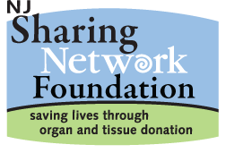

How does organ donation work?
"Organ and tissue donation are selfless acts of altruism.""Organ donation is one of the highest forms of humanitarianism". "By registering to be an organ and tissue donor, you have the power to save 8 lives". Alison lynch
Step 1- Sign up to donate life on your driver's license.
Step 2- Give a living donation, donate: blood, bone marrow, a kidney, a piece of your liver, a lung lobe or bone marrow.
Step 3- Castastrophic event = Call for Organ Donation
Step 4- Unregistered donors may donate if a family member agrees to the donation.
Step 5 - Matching the Donor to the Recepient by Blood Type.
Step 6 - Evaluation of the Quality of the Organs
Step 7 - Transplant Surgery
Step 8 - Donor Family Honors Their Loved One Through Their Gift of Life.
Step 9 - Recipient Meets the Donor Family.
Step 10 - Together They Commemorate the Organ Donor.
For More Information Contact: The NJ Sharing Network Foundation
Website by Alison Lynch:Email Me